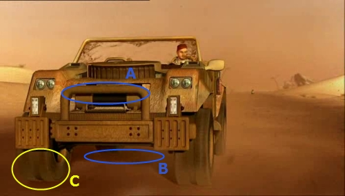
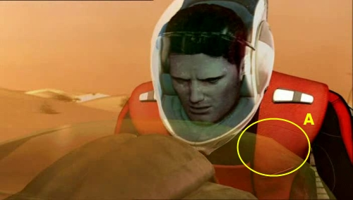
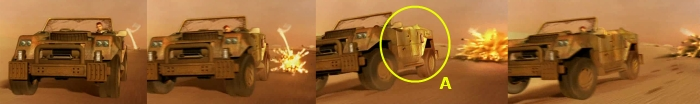
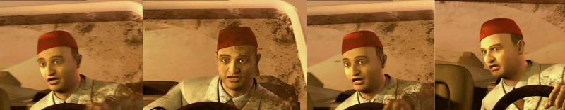

Project 1 | Project 2 |Project 3 (Team Project) |
Paper Presentation | Final Project
Introduction | [9.18 - 9.30]: Run | [9.34 - 9.37]: Hittin' the rock |
[9.38 - 9.41]: Off the car! | [9.44 - 9.48]: Round and round
[9.18 - 9.30]: RUN!
The first noticeable imperfection is right at the beginning of the sequence. Observing
the car we can notice that shadows casted by the car on itself (A) are way darker and
defined than the shadow casted by the car
on the road (B). This may not
be an acutal error, and may depend only on the choice of light positions. The effect
still is quite weird, since the car gives the effect of being superimposed over
the background. Also, the shading of wheels (C) seems to be inconsistent with respect
to the shading of the rest of the car: wheel are shaded as light comes from a really
low angle, while other parts of the car suggest the presence of a light source above
the car itself.
Another minor error can be noticed a little bit later in the animation (9.20).
In the following snapshot the bike front glass appears to be quite low-poly (A)
if compared
to the rest of the model. Also, the glass shows no refraction at all, and even no
specular reflections as one would expect on this kind of material. Again this may
be only due to the choice of light placing: still, one can't help but notice that
the resulting effect fells unrealistic.
The next series of frames is taken from a sequence that quite does the trick. A
rocket explodes right behind the bad guy,making him lose control of the car. You
can notice the quite good and curved smoke trail of the rocket before it hits the
terrain. The round movement of the rocket has just been underlined in a previous
sequence, with a nice camera movement following the rocket itself, so here the shape
of the trail gives a sense of consistency with the previous shot. Another good thing
about this sequence is the explosion itself. We'll see how in other points of the
animation particle systems will look quite weak. Here instead the generated effect
looks quite realistic. The explosion also emits light, as you can notice from the
brighter side of the car in (A). This also helps achieving a more credible effect
overall. The only flaw here, is in the car movement. The car is not going offroad
directly because of the explosion, but because of the bad guy abruptly steering
to the left (at least this is the effect the animation suggests). The problem is
that there is no time separation between the beginning of the explosion and of the
car steering. It looks like the driver is reacting immediately
to the explosion itself, which is quite unrealistic. One may argue that the bad
guy may have seen the rocket before the explosion, but in this case his action (steering)
would have been anticipated with respect to the explosion. Having
both the boom and the steering begin at the same time makes this particular sequence
a little bit mechanic.

Now, look at this sequence:

As you can see, it shows a close-up of the bad
guy after his car has almost
been hit by a rocket. We can notice three flaws here:
- The character expression is expected to communicate a mix of surprise and fear,
but the actual result is pretty bad. The overall effect is of an extremely 'syntetic'
result. Some exaggeration on the skin deformation, at least for some of the control
points, may have helped here.
- The expression tends to be quite static along
the entire closeup sequence. There
are some minor modifications over the skin deformation but they are quite subtle,
and they do not help avoiding the overall feeling of a freezed expression.
- The skin material looks more like plastic than actual skin. It lacks detail, has
too much highlight and is definitely too smooth (i.e. there are no wrinkles on the
forehead). Creating realistic (and physically correct) skin models is a challenging
(and time consuming) task, but we can still notice that other characters
present in this animation have more correct skin models. Probably less work has been adressed
to the character we are analyzing, since it is has been likely used only in this
sequence.
|